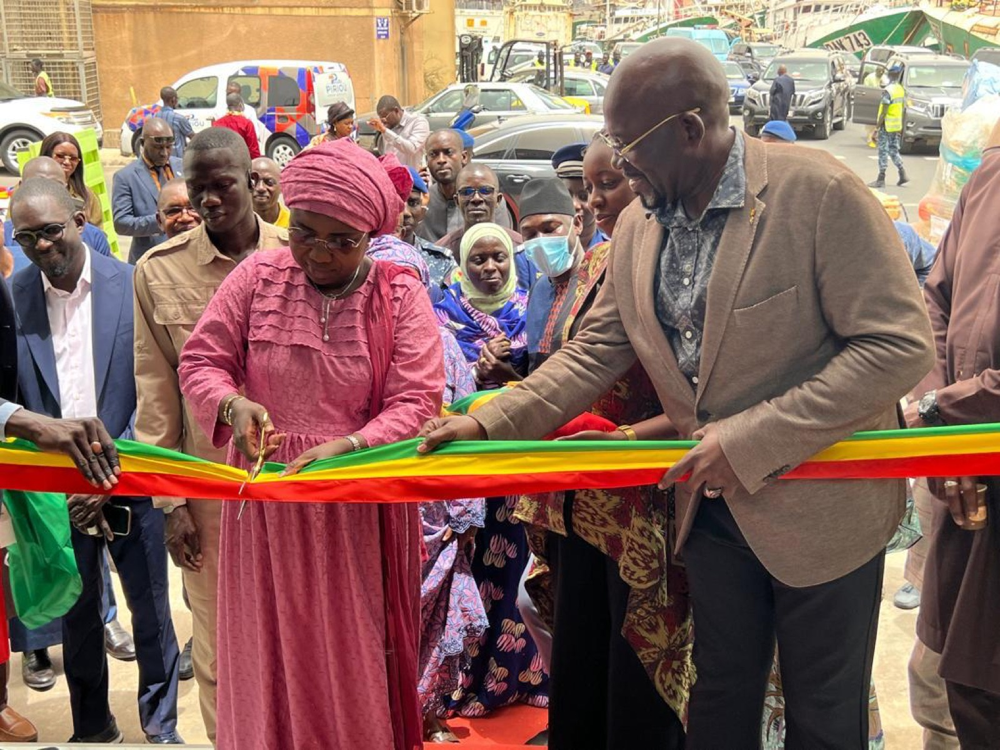

Le 22 mai 2025, le Groupe NGF a franchi une étape majeure de son histoire en inaugurant ses nouveaux locaux au cœur du Port de Dakar, au Nouveau quai de pêche du Môle 10.
La cérémonie a été présidée par Dr Fatou Diouf, alors Ministre des Pêches et de l'Économie maritime, venue couper le ruban aux couleurs nationales et visiter le nouvel espace. Elle était entourée des autorités portuaires, des équipes du Groupe et de ses partenaires.
Après un accueil sur le quai, face aux pirogues et aux navires de pêche, la Ministre a parcouru le showroom du Groupe : filets et chaluts, cordages, accastillage, anodes et matériel de sécurité y sont désormais présentés dans un espace pensé pour les professionnels de la mer. Les équipes ont détaillé les gammes et les services proposés, de l'équipement de la pêche artisanale aux solutions pour l'industrie et le naval.
- Événement
- Inauguration des nouveaux locaux
- Date
- 22 mai 2025
- Présidée par
- Dr Fatou Diouf, alors Ministre des Pêches et de l'Économie maritime
- Lieu
- Nouveau quai de pêche, Môle 10, Port de Dakar
Un nouvel écrin au service des professionnels
Ces nouveaux locaux réunissent sous un même toit le magasin, le showroom et les équipes techniques du Groupe. Ils traduisent l'ambition de NGF : rester au plus près de ses clients, au bord du quai, avec des produits de dernière génération et un conseil de proximité, l'excellence technique au service de la performance.
